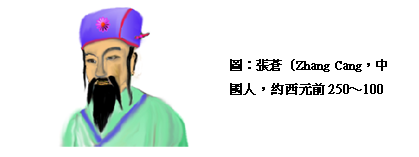
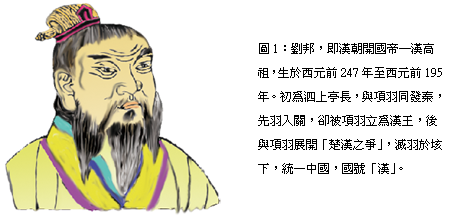
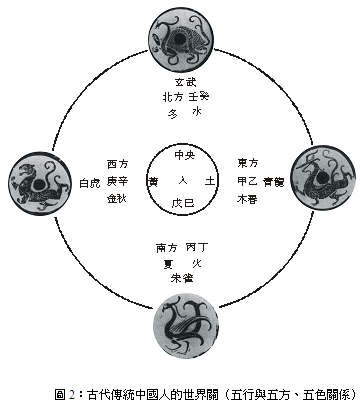
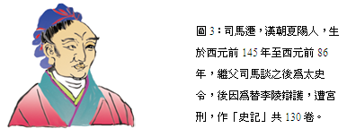
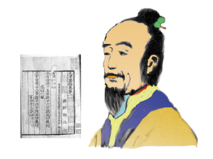

張蒼（Zhang Cang，中國人，約西元前250～100年）
張蒼生於中國戰國時代末期河南省陽武人（今日的原陽縣）。秦朝時為禦史（禦史原是君主近臣，本來從事記事的職務，戰國時成為君主的親信，用以監察百官，逐漸變成糾彈官員的風憲官），後因犯法逃亡。劉邦（Liu Bang 圖1 ）起義時，跟隨劉邦南征北討，屢建戰功。劉邦稱帝（西元前202年）時被任命為常山（今河北省元氏縣西北）太守（古代官名，一郡（比縣大）之長，亦作知府），西元前201年又被晉升為北平侯（古代封給貴族或功臣名位，分公、侯、伯、子、男五等），食邑1200戶，再升為計相（相：官名，百官之首）。西元前187年，呂后登基，西元前180年，呂后崩，周勃及陳平盡殺諸呂，文帝即位，蒼升為御史大夫（大夫：
古代官名，位於卿之下，士之上；御史大夫是副丞相，因為他是禦史的領袖並兼掌監察任務），文帝四年（西元前176年），晉升為丞相（官名，秦朝置丞相，尊稱相國，助理天子理萬機，漢朝先置相國，後稱為丞相）。西元前165年，魯人公孫臣上書文帝，言：漢朝屬於「土德」，應崇尚黃色，並更改年號，此理論與蒼所推算漢朝屬「水德」，崇尚黑色不同。就在爭辯中，有人發現黃龍顯瑞於甘肅，於是文帝深信漢應屬土德，西元前163年，文帝召公孫臣為博士（秦置博士，掌通古今，漢武帝置五經博士，自此以後至清，均置國子博士、太常博士等官），改革成土德的曆制，更改元年。第二年（西元前162年），蒼稱病罷官，漢景帝五年（西元前152年）逝世。

張蒼一生擔任過秦朝的圖書典籍主管，博覽秦朝以前的科學書籍，漢朝以後，又擔任計相，掌管需要複雜計算的天文曆法與水利工程，他精通計算是很自然的。在科學上及數學上，他的貢獻有二：
一、著作五德曆譜十八編
中國自古以來即認為宇宙乃是由五種元素「金、木、水、火、土」所組成，稱之為五行。宇宙以這五種元素交流，人以五臟系統化生五色，配合五方，相生相剋，迴圈不已（圖2）。
它們之間的相生、相克及關係如下：
1. 相生：金生水，水生木，木生火、火生土、土生金。
2. 相克：金克木，木克土，土克水，水克火，火克金。
3. 五臟與五行關係：肺屬金，腎屬水，肝屬木，心屬火，脾屬土。
4. 五色與五行關係：木主化生青色，火主化生赤色，土主化生黃色，金主化生白色，水主化生黑色。
5. 五方與五行關係：東方甲乙木，南方丙丁火，中央戊己土，西方庚辛金，北方壬癸水。
這種五行的關念，在以中國為主的東方，可說深入人心，而且應用到各方面的解釋，舉凡天文、地理、人事、萬物，都可用五行相生相剋的原理來解釋，甚至醫學上的道理及朝代興衰也不離五行的應用。舉例說：目前我們俗稱商品、物質為「東西」，為什麼叫東西，而不叫「南北」。相傳宋朝著名大學問家--朱熹，有一天在一條小巷，偶遇其精通天文地理的好友，朱熹笑問：「你提竹籃到哪裡去呀？」，好友回答說：「我呀，上街去買東西。」朱熹聽了有些摸不著邊，想不出他究竟在說什麼？於是再問說：「買東西，為什麼不買南北。」，好友笑道：「虧你還是一位名滿天下的大學問家，請問金、木、水、火、土中，南屬火，北屬水，它們能放在竹籃裡嗎？我只不過買些木頭作的材料和五金罷了！」，後來這個有趣小故事，就這樣在民間流傳，天長日久，「東西」逐漸被作為商品、物質的代名詞。

五行學說肇始於殷末周初，西周末年幽王時，進一步認為金、木、水、火、土五行是原始不可分的物質（此理論與希臘聖賢見解相似），它們互相結合就能產生各種各樣的東西，五行學說至此已成形。五行學說的壯大，是起因於戰國時代的人歷經百年戰亂，對時局絕望而淪入宿命式的期待，他們渴望盛世的來臨，並且希望瞭解世局的演變，因此發展出一套能預知世局演變的五行終始說。五行終始說是以五德為基礎，所謂五德是講究五行的勢力，五德輪流支配這個世界，當某一德輪值時，就由代表該德的朝代興起而統治天下，如何證明某人某朝可以代表那個德？那就要看當時出現怎麼樣的祥瑞？
司馬遷（Sima Qian圖3）於史記說：「漢相張蒼曆譜五德，上大夫董仲舒（Dong Zhong Shu）推〈春秋〉義，頗著文焉。」（漢書 藝文志）亦曾說：張蒼著有關言陰陽曆律十八篇。司馬貞索隱曰：「張蒼著（終始五德傳）也」，從書名和司馬遷史記及班固漢書的說法，這是一本以五行的五德理論為基礎，來論朝代興衰的曆法。

綜觀張蒼一生，因為擔任漢朝計相，需制定律曆，他推算漢為水德，需崇尚黑色，著述此方面書籍，可說是五德理論的權威，但也因為五德的曆制遭受到公孫臣的攻擊，認為漢屬土，應崇尚黃色而罷官。
二、刪補<九章算術>
<九章算術>是中國<算經十書>中內容最豐富和最重要的一部書，它幾乎集中過去和當時的全部數學知識，因為將全書246道問題分為九章（即：一、方田；二、粟米；三、衰分；四、少廣；五、商功；六、均輸；七、不足；八、方程；九、勾股），所以叫作<九章算術>。這書不是出自某一個人所寫，它是經過歷代各家的修訂和增補，才逐漸成為定本。<九章>

圖4：劉徽與九章算術注
劉徽，中國魏晉傑出數學家，幼年學習九章算術，成年後又繼續鑽研，在魏景元四年（西元263年）注（九章算術），並撰（重差）作為（九章算術）注第十卷。唐初以後，以（海島算經）為名單行。
雖然不能確定什麼時候開始編寫，但無疑地，經過張蒼和耿壽昌的刪補，及劉徽的注釋，已完成定本。
劉徽（圖4）在<九章算術注序>說：「按周公制禮而有九數，九數之流，則九章是俟。往者暴秦焚書，經數散壞。自時厥後，漢北平侯張蒼，大司農中丞耿壽昌皆以善算名世。蒼等因舊文遺殘，各稱補刪。」
因此<九章算術>在暴秦焚書時（西元前213年）之前，至少已開始流傳，但經秦始皇的焚書而散壞，之後，張蒼和耿壽昌把散壞的本子加以整理和刪補，最後由劉徽在西元263年作注，才完成現今流傳的版本。